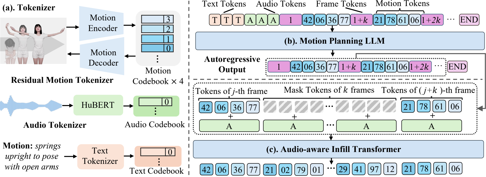
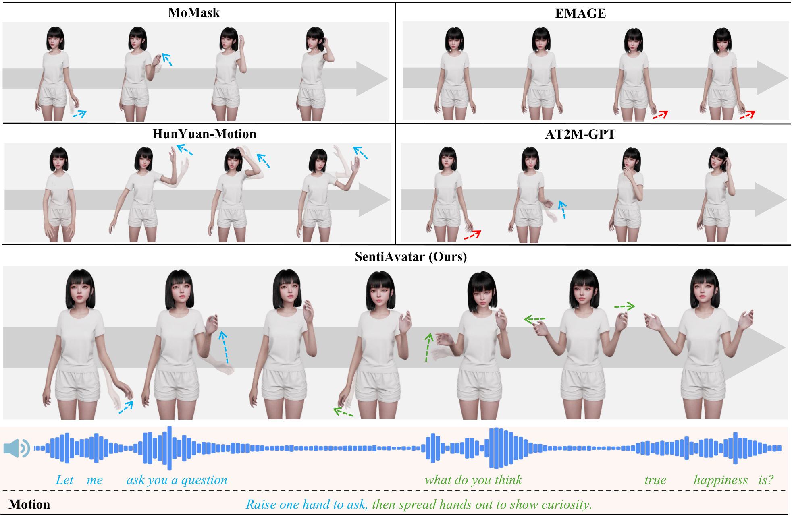

1 Gaoling School of Artificial Intelligence, Renmin University of China 2 SentiPulse 3 College of Computer Science, Inner Mongolia University * Equal contribution. Chuhao Jin led this project. † Corresponding author.
We present SentiAvatar, a framework for building expressive interactive 3D digital humans, and use it to create SuSu,
a virtual character that speaks, gestures, and emotes in real time. Achieving such a system remains challenging, as it requires jointly addressing
three key problems: the lack of large-scale high-quality multimodal data, robust semantic-to-motion mapping, and fine-grained frame-level motion-prosody synchronization.
To solve these problems, first, we build SuSuInterActs (21K clips, 37 hours),
a dialogue corpus captured via optical motion capture around a single character with synchronized speech, full-body motion, and facial expressions.
Second, we pre-train a Motion Foundation Model on 200K+ motion sequences, equipping it with rich action priors that go well
beyond the conversation. We then propose an audio-aware plan-then-infill architecture that decouples sentence-level semantic
planning from frame-level prosody-driven interpolation, so that generated motions are both semantically appropriate and rhythmically aligned with speech.
Experiments show that SentiAvatar achieves state-of-the-art on both SuSuInterActs (R@1 43.64%, nearly 2× the best baseline) and BEATv2 (FGD 4.941, BC 8.078),
producing 6 s of output in 0.3 s with unlimited multi-turn streaming.
Dataset
We curate SuSuInterActs, a dialogue corpus captured via optical motion capture
around a single character with synchronized speech, full-body motion, and facial expressions.
Below are representative examples from our dataset, each with the corresponding action/expression label and dialogue text.
🔊 Hover over a video to play with audio. Only the hovered video will play sound.
动作：高抬腿在原地踏步，双臂配合着大幅度摆动，像一个凯旋的士兵。
那当然，它可是负责赶走你所有烦恼的卫兵呢。
表情：抗拒
跟我有什么关系？我又出不去。
动作：摊手表示无奈
不然呢，我又不能出门。
动作：双臂缓缓抬起，在身前交错，像在拥抱一个不存在的人。
好啦，我的即兴表演结束了，观众是不是该给点掌声？
动作：身体大幅度地左右倾斜，手臂随着身体摆动。
哎呀，从这边好像也看不到，你挪一下嘛。
动作：双臂从身体两侧缓缓举过头顶，再像流水一样顺着身体滑落下来。
下次走路小心点，我的舞蹈表演可不是免费的。
Method
Overview of SentiAvatar. (a) Multi-modal inputs are quantized into tokens via encoders. The body pathway employs a
hierarchical generation: (b) LLM planner predicts sparse keyframe tokens to capture high-level dialogue content, followed by
(c) an audio-aware Infill Transformer for dense, prosody-driven interpolation to ensure fine-grained temporal synchronization.

Qualitative Analysis
Qualitative comparison of generated motions across methods. Each row shows keyframe sequences for a given motion and speech.
Texts and arrows of the same color indicate the same time step. The red arrow indicates an incorrect action.

Quantitative Results
Quantitative comparison on SuSuInterActs. Bold: best; ↑/↓: higher/lower is better. ESD in seconds. "†" indicates T2M-GPT variants with token-by-token autoregressive generation.
Method
Condition
R@1 ↑
R@2 ↑
R@3 ↑
FID ↓
ESD ↓
Diversity ↑
Real Motion
—
62.20
73.56
78.70
0.000
0.308
22.61
Audio-only methods
EMAGE
Audio
5.00
9.40
13.32
441.6
0.606
12.92
A2M-GPT†
Audio
8.72
15.96
20.08
13.66
0.477
22.23
Text-only methods
HunYuan-Motion
Text
5.21
8.59
11.9
352.56
0.708
16.92
T2M-GPT
Text
23.12
30.49
35.43
67.78
0.721
20.65
MoMask
Text
34.55
46.58
54.29
36.25
0.471
22.03
Audio + Text methods
AT2M-GPT†
Audio, Text
27.52
36.11
41.38
18.491
0.503
22.36
SentiAvatar (Ours)
Audio, Text
43.64
54.94
61.84
8.912
0.456
22.41
Improvement (%)
+26.3
+17.9
+13.9
+34.8
+3.2
+0.2
Conclusion
In this paper, we presented SentiAvatar, a novel framework for building highly expressive, interactive 3D digital humans, demonstrated through our real-time character, SuSu.
To address the scarcity of interactive conversational data and the challenges of motion-prosody synchronization, we introduced SuSuInterActs, a 37-hour multimodal dialogue corpus,
and proposed a plan-then-infill architecture powered by a pre-trained Motion Foundation Model on over 200K sequences.
This design effectively decouples high-level semantic planning from frame-level audio-driven interpolation, ensuring that the generated motions are both contextually accurate and rhythmically aligned with speech.
Experiments demonstrate that SentiAvatar achieves state-of-the-art performance on both SuSuInterActs and BEATv2.
With highly efficient generation (0.3 s for 6 s of output) and open-sourced resources, our work provides a robust foundation for future research in natural, real-time virtual human interactions.
Citation
If you find this work useful in your research, please cite:
@misc{jin2026sentiavatarexpressiveinteractivedigital,
title={SentiAvatar: Towards Expressive and Interactive Digital Humans},
author={Chuhao Jin and Rui Zhang and Qingzhe Gao and Haoyu Shi and Dayu Wu and Yichen Jiang and Yihan Wu and Ruihua Song},
year={2026},
eprint={2604.02908},
archivePrefix={arXiv},
primaryClass={cs.CV},
url={https://arxiv.org/abs/2604.02908},
}